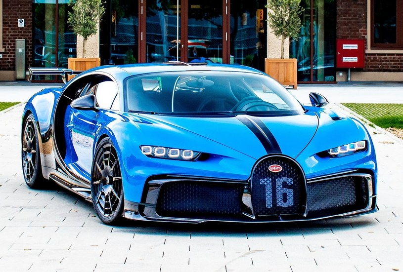

Przedsiębiorstwo Bugatti założył Ettore Bugatti. Urodził się on w Mediolanie jako potomek włoskiej rodziny artystycznej, który osiadł w mieście Molsheim w Alzacji, gdzie poświęcił się pracom nad autorskimi samochodami i silnikami. Gdy jego przedsięwzięcie rozpoczęło działalność w 1909 roku, Molsheim wraz całym regionem było częścią Cesarstwa Niemieckiego - zmianie uległo to 9 lat później, gdy po I wojnie światowej na mocy Traktatu wersalskiego cała Alzacja-Lotaryngia weszła w skład III Republiki Francuskiej.
Bugatti w początkowych latach działalności rozwijało zarówno drogowe samochody sportowe, jak i konstrukcje przeznaczone stricte do poruszania się w wyścigach. Przełomowym momentem w historii firmy był wyścig Grand Prix Brescii w 1921 roku, kiedy to bolidy Bugatti zapewniły zwycięstwo poprzez zajęcie pierwszych 4 miejsc. Kolejnym ważnym momentem w historii firmy była seria zwycięstw w wyścigach samochodowych zapoczątkowana przy pomocy bolidu T35 w 1925 roku, które przez resztę dekady zdobywały co roku tytuły. Oprócz konstrukcji wyścigowych, Bugatti na przełomie lat 20. i 30. XX wieku koncentrowało się także na budowie samochodów luksusowych - ważnym momentem była prezentacja limuzyny Royale w 1927 roku, która wyróżniała się ponad
Historię Bugatti przerwał wybuch II wojny światowej w 1939 roku, które rok później zakończyło produkcję swoich dotychczasowych konstrukcji. Kolejną komplikacja nadeszła dwa lata po zakończeniu konfliktu, gdy w 1947 roku zmarł założyciel Ettore Bugatti. Marazm przerwano na początku lat 50. XX wieku, kiedy to spadkobiercy Bugatti z zaangażowaniem włoskich konstruktorów doprowadzili do wprowadzenia na rynek luksusowej limuzyny Type 101, zbudowanej ostatecznie jedynie w mniej niż 10 sztuakch. W kolejnych latach Bugatti pracowało jeszcze nad lekkim samochodem sportowym Bugatti Type 252, które nie wykroczyło poza fazę prototypu i pozostało ostatnią konstrukcją przedsiębiorstwa. W 1963 roku Bugatti zostało kupione i włączone w strukrurę hiszpańskiego Hispano-Suiza.
Bugatti F1 – francuski zespół i konstruktor Formuły 1, uczestnik Grand Prix Francji 1956. Kierowcą Automobiles Bugatti był Maurice Trintignant. W 1995 roku miały miejsce niemające pokrycia w rzeczywistości plotki o powrocie Bugatti do Formuły 1.
W październiku 2020 roku Bugatti przedstawiło kolejny model specjalny zbudowany w ramach polityki rozbudowy portfolio, podobnie jak wcześniejsze konstrukcje Divo, La Voiture Noire i Centodieci powstając w oparciu o podzespoły techniczne głównego modelu Chiron. W przeciwieństwie do dotychczasowych konstrukcji Bugatti, model Bolide zamiast luksusowo-sportowego zyskał stricte wyczynowy charakter samochodu wyścigowego.